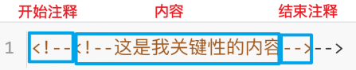

HTML用于编写网页。平时上网通过浏览器我们看到的大部分页面都是由html编写的。在浏览器访问网页时，可以通过“右键/查看网页源代码”看到具体的html代码。
网页内容包含：HTML代码、CSS代码、JavaScript代码等内容。
HTML代码：用于展示需要显示的数据。
CSS代码：使显示的数据更加好看。
JavaScript代码：使整个页面显示的数据具有动画效果。
网页根据内容是否改变分为：静态页面、动态页面。
静态页面：编写之后在浏览器不再改变的网页。HTML就是用于编写静态网页的。
动态页面：会根据不同的情况展示不同的内容。例如：登录成功后页面显示用户名。
HTML文件不需要编译，直接使用浏览器阅读即可
HTML文件的扩展名是*.html或*.htm
HTML结构都是由标签组成
标签名预先定义好的，我们只需要了解其功能即可。
标签名不区分大小写
通常情况下标签由开始标签和结束标签组成。例如：<a></a>
如果没有结束标签，建议以/结尾。例如：<img/>
HTML结构包括两部分：头head和体body
对于一个网页来说，我们在HTML中主要来学习一些常用的标签。通过学习这些标签，我们能把90%的网站都可以慢慢搭建。
前端知识我们使用软件HBuilder来编程，首先打开sublime，新建index.html，输入html回车：
<html>
<head>
<title></title>
</head>
<body>
</body>
</html>生成一大堆的内容，是不是看的很懵逼。那么接下来我们来剖析这段代码。
每一个页面中的结构，都会有一个最外层的标签，它表示文档内容的开始。
html标签包含两部分：头部声明(<head>)和内容部分(<body>)。
如果把网页比作洋葱，一层包一层，那<html>标签就是洋葱最外层的皮， <html> 元素是一张网页的根标签，所以其他所有元素都是是此元素的后代。
把一个网页比作一个人的话，那么head标签就是这个人的基本信息，虽然这个没法直接观察到，但这些内容确实存在，并且是在网页中必不可少的。head用于表示网页的中的一个基础的信息(元信息)
把一个网页比作一个人的话，那么body标签就是这个人的身体，肤色，痔疮。它里面的内容是看得见摸得着的。对于人的性格，意淫的想法，性取向等body是管不着的。那么body标签包含页面中所有的可见元素，比如网页中的文本的展示内容，漂亮meinv ，动听的音乐，炫酷的电影等都属于body所管。
好了，相信大家对html文档结构有了一定的认知，那么我们接下来，就一一的学习head和body中的相关标签。
HTML不区分大小写，也就是说<head>和<HEAD>都可以。
HTML页面的后缀名是html或者htm(win32时代，系统只能识别3位扩展名时使用的。现在一般都使用.html。
HTML的结构：
声明部分：主要作用是用来告诉浏览器这个页面使用的是哪个标准。是HTML5标准。
head部分：将页面的一些额外信息告诉服务器。不会显示在页面上。
body部分：我们所写的代码必须放在此标签內。
所有标签都要正确的嵌套，不能交叉嵌套。
交叉嵌套：
<html><head></html><head>正确写法：
<html><head><head></html>所有的标签尽量都小写，当然也可以大写，因为html中不区分大小写，但是小写相对比大写来说，它更易于阅读。
所有的标签要闭合：
双闭合 比如
<html></html>单闭合 比如
<meta />
在页面中，凡是被注释掉的代码，浏览器都不会去解析。
html中的注释：
<!--这是我关键性的内容-->注释的作用：
给自己看。随着页面的内容越多，高效的注释能让我们的代码更易阅读，并且关键性的代码我们可以用注释标注出来。
给别人看。比如自己写的html代码，有的地方代码需要说明一下，同时要转给别人看和解读分析的，这个时候就有必要使用html注释。
正确使用注释：
<!--<!--这是我关键性的内容-->-->不能一个html注释中，再放一个html注释，不然浏览器会如下解析。

注释快捷键：windows上 Ctrl + /
head标签中的相关标签，是看不见摸不着的，仅仅是对应用于网页的一些基础信息(元信息)。
meta标签共有两个属性，它们分别是http-equiv属性和name属性，不同的属性又有不同的参数值，这些不同的参数值就实现了不同的网页功能。
它用来向浏览器传达一些有用的信息，帮助浏览器正确地显示网页内容，与之对应的属性值为content，content中的内容其实就是各个参数的变量值。
在html4.01版本中，我们使用下面配置来规定HTML 文档的字符编码。
<meta http-equiv="Content-Type" content="text/html; charset=UTF-8">但在html5版本中，我们使用更简化的方式来规定HTML 文档的字符编码。
<meta charset="UTF-8">主要用于页面的关键字和描述，是写给搜索引擎看的，关键字可以有多个用 ‘,’号隔开，与之对应的属性值为content，content中的内容主要是便于搜索引擎机器人查找信息和分类信息用的。
<meta name="Keywords" content="网易,邮箱,游戏,新闻,体育,娱乐,女性,亚运,论坛,短信" />
这些关键词，就是告诉搜索引擎，这个网页是干嘛的，能够提高搜索命中率。让别人能够找到你，搜索到。
<meta name="Description" content="网易是中国领先的互联网技术公司，为用户提供免费邮箱、游戏、搜索引擎服务，开设新闻、娱乐、体育等30多个内容频道，及博客、视频、论坛等互动交流，网聚人的力量。" />
只要设置Description页面描述，那么百度搜索结果，就能够显示这些语句，这个技术叫做SEO（search engine optimization，搜索引擎优化）。
主要用来告诉用户和搜索引擎这个网页的主要内容是什么，搜索引擎可以通过网页标题，迅速的判断出当前网页的主题。
<title>爱编程的小灰灰</title>